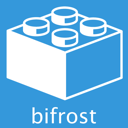

Bifrost represents an end-to-end platform for building Line of Business applications built for productivity without compromise. It focuses around the concepts from Domain Driven Design, so that developers can put their energy into deliver more business value for their products without diving into technical solutions. Built from the ground up with an high focus on S.O.L.I.D, Separation of Concerns and CQRS to be able to deliver scalable solutions that can truly deliver on the ideas and promises of Microservices. It represents the paradigm shift that is needed in modern LOB solutions to truly embrace cloud development.
Something
Some stuff...